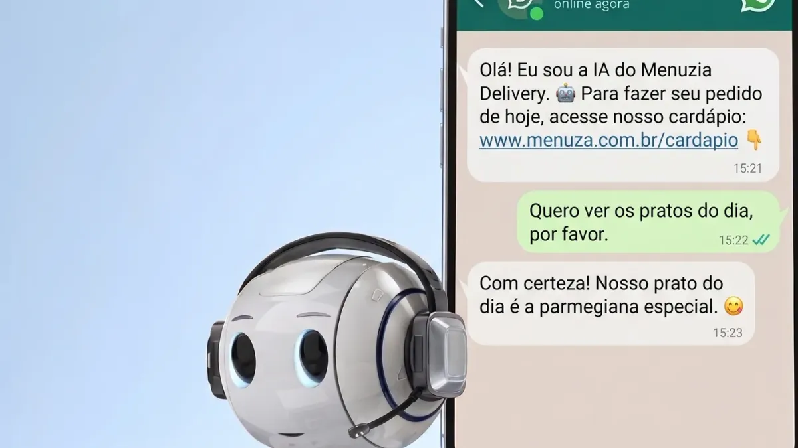

Agente de IA para delivery: um atendente no WhatsApp que conversa e fecha o pedido

Sexta, 20h: a chapa está cheia, o WhatsApp não para e cada minuto sem resposta é um cliente indo pedir em outro lugar. Um agente de IA para delivery assume essa conversa: lê o que o cliente escreveu, entende o que ele quer e conduz o pedido até o fim, como um bom atendente faria.
Robô de menu x agente de IA
O robô tradicional funciona por opções: "digite 1 para cardápio". O Agente de IA do Menuzia entende frases soltas, como "me vê dois x-bacon sem cebola e uma coca", e segue a conversa de onde ela parou. Os dois trabalham juntos no mesmo número: o robô cuida do automático e a IA entra na conversa livre.
O que o agente faz no WhatsApp
- Tira dúvidas do cardápio consultando os itens e preços reais da sua loja
- Anota o pedido pela conversa, com complementos, adicionais e observações
- Calcula a taxa de entrega pelo sistema, sem conta de cabeça
- Oferece o "peça também" uma vez, depois que o cliente diz que é só isso
- Entende áudio: a mensagem de voz do cliente é transcrita e tratada como texto
- Envia o Pix copia e cola na hora, quando essa é a forma de pagamento
- Informa o status de um pedido já feito
A IA não pode inventar preço
Esse é o medo de todo dono, e com razão. Por isso o agente segue regras fixas:
- Só cita item e preço que vieram do seu cardápio naquele momento.
- Total e taxa vêm do sistema, nunca de um cálculo da IA.
- Não dá desconto, não promete brinde e não faz exceção.
- Se perguntarem, diz que é o atendente virtual da loja.
- Sem a informação, chama uma pessoa da loja em vez de chutar.
Você ensina, ele aprende as regras da casa
Estacionamento, aceita vale-refeição, tem opção sem glúten: você cadastra as respostas no Conhecimento da loja e o agente passa a usá-las, mesmo que o cliente pergunte de outro jeito.
Quando o humano entra
Reclamação séria, pedido fora do comum ou cliente que quer falar com alguém: o agente chama sua equipe e avisa o cliente. Mudanças em pedido já feito ficam registradas para a loja confirmar quando for o caso.
Como contratar
O Agente de IA é um módulo do Menuzia, liberado pela nossa equipe na sua loja, sem comissão sobre os pedidos. Fale com a gente para ver as condições. Quer entender o fluxo completo? Veja como tirar pedidos pelo WhatsApp.
Buscas relacionadas
O que donos de restaurante e delivery pesquisam antes de contratar — cada busca leva para a página que responde a ela:
Perguntas frequentes
A IA do Menuzia inventa preço ou item?
Não. O agente só cita itens e preços devolvidos pelo seu cardápio naquele momento, e o total e a taxa são calculados pelo sistema.
O agente de IA entende áudio do cliente?
Sim. Com o Agente de IA ligado, o áudio recebido no WhatsApp é transcrito e a conversa segue normalmente.
O cliente sabe que está falando com uma IA?
Se perguntar, sim. A regra do agente é dizer que é o atendente virtual da loja e nunca fingir ser uma pessoa.
E se a IA não souber responder?
Ela chama uma pessoa da loja e avisa o cliente que alguém vai confirmar a informação, sem chutar a resposta.
O agente de IA cobra comissão por pedido?
Não. O Menuzia não cobra comissão por pedido. O Agente de IA é um módulo liberado pela nossa equipe; fale com a gente para ver as condições.
Fale com um especialista do Menuzia
Sem comissão por pedido e sem fidelidade. Planos a partir de R$97/mês, com configuração feita pela nossa equipe.
Quero conhecer o Menuzia →